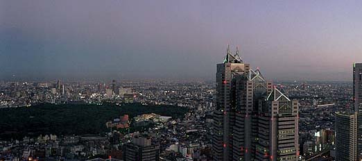
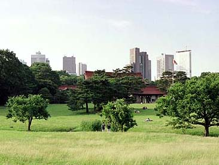
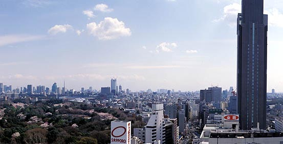

Forest in the cities
|
The concept of a city and good, "urban" manners was superimposed on the original, deeply animistic views of the Japanese on nature, according to which nature and culture are in an inseparable unity. The combination of these concepts has had a double effect on Japan's urban culture. First, it |
 |
found its symbolic expression in that refined sense of nature, which is imbued with Japanese poetry and architecture, and secondly, it manifested itself in the special approach of the Japanese to the formation of an urban environment, in which vegetation is given a central place.
|  |
Of course, not all forests have been preserved in their original form - many have become victims of urbanization. Yet, thanks to sacred groves preserved in the heart of even the largest cities, Japanese culture maintains a strong connection with the natural world that prevailed here before the emergence of cities. For all its love for nature, Japanese society was unable to protect it from serious damage, especially from an aesthetic point of view. |
|
Under the purely external similarity of the piles of human dwellings in large and small cities of the world, there are differences not only between cities, but also the societies themselves to which their inhabitants belong. It is already indicative that in Japan there is an analogue of the European forum (arena of political speeches from its |
 |
characteristic colonnades and towers) is nothing more than a sacred grove - a place of unity with primitive nature. In both cases, the city serves as a means of expressing the spiritual fundamental principle of society: in Europe it is the Word and Civilization, in Japan - Nature and the Word.